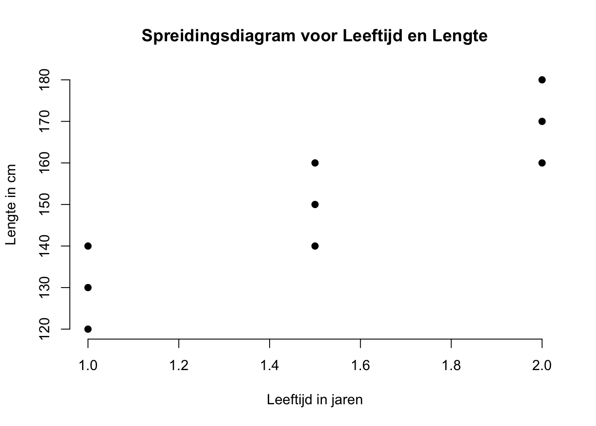
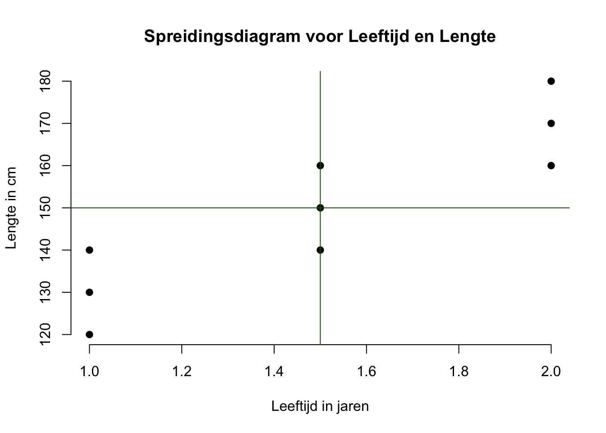

| $i$ | $Y_i$ | $X_i$ |
|---|---|---|
| 1 | 120 | 1.0 |
| 2 | 130 | 1.0 |
| 3 | 140 | 1.0 |
| 4 | 140 | 1.5 |
| 5 | 150 | 1.5 |
| 6 | 160 | 1.5 |
| 7 | 160 | 2.0 |
| 8 | 170 | 2.0 |
| 9 | 180 | 2.0 |
Hoofdstuk 3 - Samenhang tussen 2 variabelen, correlatie.
Tot zo ver hebben we in hoofdstuk \(0\), \(1\) en \(2\) telkens naar één variabele gekeken (en die dus beschreven aan de hand van een aantal statistieken zoals het gemiddelde en de standaardafwijking). In dit hoofdstuk gaan we een stap verder en kijken we naar het verband tussen twee variabelen. Denk bijvoorbeeld aan het verband tussen motivatie en prestatie, mensen die minder gemotiveerd zijn (dus onder-gemiddeld op motivatie scoren) zullen hoogstwaarschijnlijk ook minder presteren (onder-gemiddeld presteren). En mensen die hoog gemotiveerd zijn, zullen waarschijnlijk ook vaker hoger dan gemiddeld presteren. Hier zijn het dus de twee variabelen motivatie en prestatie die een samenhang (verband) vertonen. Natuurlijk zijn er uitzonderingen op deze uitspraken, zoals die luie (ongemotiveerde) nerd die toch hoog presteert vanwege zijn hoge intelligentie, maar bij algemene verwachtingen laat je natuurlijk - die extreem rare of bijzondere gevallen, even buiten beschouwing.
Correlatie
correlatie, covariatie, covariantie, associatie, samenhang, afhankelijkheid of relatie (tussen twee variabelen)
Bovenstaande begrippen betekenen allemaal hetzelfde. Het draait natuurlijk allemaal om het voorspellen of verklaren van verschillen (variatie) of waarden, dus natuurlijk ook bij het begrip ‘verband’. Het enige verschil is dat we nu bij een voorspelling qua waarde voor de ene variabele, rekening houden met een waarde op een andere variabele. Omdat die twee waarden dus ‘iets met elkaar te maken hebben’ of dus ‘samen’ ‘hangen’. Als je weet dat iemand een man (waarde op de ene variabele, geslacht) is, zal die wel wat langer (waarde op de andere variabele) qua lengte zijn. Dus de voorspelling (of beste gok) qua lengte - als je weet dat iemand een man is - zal hoger (anders) zijn, dan als je weet dat die persoon een vrouw is.Vrouwen zijn over het algemeen (meestal) kleiner. Als we (op grond van de waarden van de ene variabele) alleen maar juiste (dus zonder fouten) voorspellingen doen voor de andere variabele, zeggen we ook wel dat het verband perfect is. Maar als het dus totaal geen zin heeft om (waarden van -) de ene variabele te gebruiken om de andere te voorspellen, zeggen we dat er geen verband is tussen die twee variabelen.
Sommige zaken zijn nou eenmaal perfect aan elkaar gerelateerd, bijvoorbeeld wanneer je temperatuur in graden Celsius omrekent naar temperatuur gemeten in Kelvin)
Sommige zaken zijn gedeeltelijk aan elkaar gerelateerd, bijvoorbeeld de lengte van een persoon en zijn gewicht, lange mensen zijn over het algemeen zwaarder maar er zijn genoeg uitzonderingen.
sommige zaken zijn in zijn geheel niet aan elkaar gerelateerd, zoals de lengte van je schoenveter en de mate waarin je van oliebollen houdt. Laten we eerst maar even kijken hoe het bij onze aapjes zit, voordat we verder gaan.
De meest basale gok qua lengte (als één van onze aapjes binnen zou komen wandelen) zou het gemiddelde van de variabele \(Y\) zijn (ook wel het nul-model of intercept-model genoemd), het gemiddelde van alle aapjes in onze steekproef wordt ook wel het ‘grote gemiddelde’ genoemd. Hier dus \(\overline{Y} = 150\). Maar stel nou dat ik je extra informatie zou geven over de leeftijd (\(X_i\)) van een aapje dat binnenkomt. Ik vertel je bijvoorbeeld dat het aapje - voordat hij binnenkomt - een leeftijd heeft van \(2\) jaar. Je mag nog steeds naar alle gegevens kijken die je in de tabel ziet staan. Zou je dan nog steeds zeggen dat de beste gok \(150\) is? Ik hoop het niet, want als je kijkt naar de drie aapjes die \(2\) jaar oud zijn, zie je dat die allemaal langer zijn dan 150 cm (namelijk 160, 170 en 180 cm). Anders gezegd: Het gemiddelde voor \(Y\) voor alléén de aapjes die de waarde 2 voor de variabele \(X\) hebben, is 170 cm. Ik hoop dat je dus \(170\) zou gokken als je weet dat een aapje dat binnenkomt, \(2\) jaar oud is. Als je zou weten dat een aapje \(1\) jaar is, zou \(130\) de beste gok of verwachting zijn en als een aapje \(1.5\) jaar is, dan zou je je voorspelling niet aanpassen en gewoon nog steeds \(150\) cm zeggen.
Het gokspelletje nog een keer, maar nu ook met de ‘nieuwe’ gokfouten (residuen):
Als je dus niet weet dat ‘toevallig’ aapje nummer \(9\) gaat binnen komen lopen én je zou ook niet weten welke leeftijd dat aapje heeft, zou je dus \(150\) cm als beste gok geven. Als dan aapje nummer \(9\) binnenkomt lopen, heb je dus een gokfout van \(30\) cm gemaakt.
Als je dus niet weet dat ‘toevallig’ aapje nummer \(9\) binnenkomt lopen, maar je weet wel dat het aapje dat binnenkomt \(2\) jaar oud is, zou je dus \(170\) cm als beste gok geven. Aangezien aapje nummer \(9\) weer ‘toevallig’ binnen komt lopen, heb je nu dus maar een gokfout van 10 cm gemaakt. Hij (\(Y_9 = 180\)) zit namelijk \(10\) cm boven je nieuwe – of specifiekere – verwachting (\(170\) cm). Ik zeg hier ‘specifieker’ omdat het gemiddelde van \(170\) alleen voor de laatste drie aapjes geldt en dat is specifieker (of minder algemeen) dan het gemiddelde van alle negen aapjes. De score van aapje nummer negen zelf (\(Y_9 = 180\)) is weer een specifiekere waarde dan het gemiddelde voor de drie aapjes van 2 jaar (\(170\)). De nieuwe afwijking of gokfout (tussen de score voor aapje nummer \(9\) en de gemiddelde lengte voor de drie aapjes van \(2.0\) jaar oud) is positief omdat de observatie (\(Y_9 = 180\)) rechts van dat laatste gemiddelde (\(170\)) zit. Besef dat je met je specifiekere model (een verwachting of voorspelling voor de lengte op basis van leeftijd) in het geval van aapje nummer \(9\) dus nog maar een gokfout maakt van \(10\) cm en niet meer van \(30\) cm. Het specifiekere model voorspelt bij dit aapje dus beter dan het algemenere model. Zou dat voor ieder aapje gelden? Als het specifiekere model – gemiddeld gezien – beter voorspelt dan het grote gemiddelde, kan je dus zeggen dat het specifiekere model de scores voor \(Y_i\) beter (terug) voorspelt of verklaart (omdat de gemiddelde gok-fout kleiner wordt).
Verband in woorden
Samenhang of verband heel algemeen: Als jou voorspelling (hier voor lengte) afhangt van de waarde op een andere variabele (hier leeftijd) dan zegt men dus dat er sprake is van samenhang tussen de twee variabelen. We zeggen dan ook wel dat de twee variabelen afhankelijk van elkaar zijn, omdat de informatie over het één (informatie qua leeftijd) iets zegt over de mogelijke informatie van het andere (lengte). Simpel gezegd:
- Naar mate een aapje ouder is, zal die ook wel wat langer zijn. Maar ook:
- Hoe jonger een aapje is, des te kleiner zal die waarschijnlijk zijn. En:
- Als een aapje gemiddeld is qua leeftijd? Dan zal die, qua voorspelling voor zijn lengte, ook gemiddeld zijn. Gemiddeld op het één betekent vaak ook gemiddeld op het andere (als variabelen dus samenhangen).
Hoe sterker het verband is, des te zekerder je bent van deze drie uitspraken (en je dus minder uitzonderingen zal tegenkomen zoals een oud ‘lilliputter’ aapje of een heel jonge ‘king kong’ aap).
Verband tussen twee variabelen is niet hetzelfde als een oorzaak/gevolg relatie tussen die variabelen.
We weten allemaal dat jonge aapjes langer worden naarmate ze ouder worden. Maar zou je deze uitspraak ook kunnen omdraaien? Dus: Naarmate aapjes langer worden zullen ze ook ouder worden. Ja dat kan! Technisch of statistisch gezien is dit precies hetzelfde, maar op de een of andere manier klinkt dit in onze taal toch niet zo lekker, maar het is dus wel goed! Die laatste uitspraak ‘klinkt’ minder fijn, omdat wij als mensen (naïevelingen dus) - op de een of andere manier - leeftijd als een soort oorzaak (begin, basis of reden) zien van lengte en dat de leeftijd van een aapje echt zijn lengte beinvloedt. Maar laten we wel wezen: Natuurlijk is lengte niet echt het gevolg van leeftijd. Leeftijd veroorzaakt geen verandering in lengte. Leeftijd beïnvloedt lengte niet. Niemand groeit vanwege de tijd, je groeit hooguit met de (leef-) tijd, de twee variabelen veranderen, of gaan samen. De echte redenen (oorzaken of factoren) dat mens en dier groeit, zijn natuurlijk zaken zoals voedsel, genen, zuurstof en een beetje liefde misschien! Echte oorzaak/gevolg relaties (causale relaties) tussen variabelen zijn heel moeilijk te bewijzen, mocht je dat toch willen doen, zul je een heus experiment moeten doen, en dus de mogelijke ‘oorzaak’ van groeien, zoals voedsel, weg moeten nemen (Natuurlijk stoppen aapjes met groeien als je ze geen eten geeft!) Denk dan dus ook echt aan een laboratorium gevoel met experimentele en controle condities. Overigens is er een tal van grote denkers (waaronder de kleine ik) die zelfs zover gaan dat ze stellen dat causale relaties überhaupt niet bestaan. Causatie is dan ook meer een onderwerp voor de filosofie. Als je een opera zangeres heel hard en hoog laat gillen naast een wijnglas dan veroorzaakt het harde en hoge geluid dat het wijnglas breekt. Maar als je tegelijkertijd een hamer op het wijnglas slaat, dan is het dus onduidelijk wie de veroorzaker was van het kapotte glas. Misschien een beetje flauw en gelukkig hoef je hier natuurlijk niet echt over na te denken, maar onthoud voorlopig wel dat causale uitspraken (het één veroorzaakt of beïnvloedt het ander, zoals de ballen op een biljarttafel, binnen de statistiek eigenlijk veel te voorbarig zijn en dus meestal ongegrond (onbewezen) zijn. Maar we maken dus vaak wel - voor het gemak - een keuze over welke variabele wij als oorzaak willen zien (die noemen we dan de X variabele, of heel verwarrend: de onafhankelijke variabele) en welke variabele we als gevolg willen zien (de Y variabele, of wederom verwarrend: de afhankelijke). In deze handleiding gaan we heel veel modelletjes (machientje of voorspel-formule) bouwen. Je stopt er iets in (de input, de X-variabele, dus de onafhankelijke variabele, Independent Variable, IV), en het produkt dat het machientje maakt, dus wat eruit komt noemen we de (voorspelling van) de afhankelijke variabele (uitkomst, criterium of Dependent Variable, DV)
Correlatie is dus niet hetzelfde als causatie, maar causatie behelst of omvat wel correlatie.
Dus als twee variabelen een samenhang vertonen (gecorreleerd zijn), is dat nog niet hetzelfde als een causaal verband tussen de twee variabelen (dat zou dus verder onderzocht moeten worden aan de hand van een experiment). Maar als (je weet dat) twee variabelen een causale (oorzaak/gevolg) relatie hebben met elkaar, dan zijn deze twee variabelen - sowieso - gecorreleerd met elkaar. Het bestaan van een correlatie tussen twee variabelen is dus een noodzakelijke voorwaarde voor causatie, maar het is nog niet genoeg voor causatie, correlatie is dus geen voldoende voorwaarde voor causatie. Dus puur een correlatie tussen twee variabelen is nog niet voldoende bewijs dat die twee variabelen ook echt causaal aan elkaar gerelateerd zijn.
Extreem voorbeeld: Als er op een dag (object, case) veel ijsjes worden gegeten (waarde op de variabele ijs-eten) dan weten we ook dat er op diezelfde dag ook meer mensen zullen verdrinken (waarde op aantal verdrinkingen die dag). De naïeveling (Geert Wilders) zou roepen dat ijs eten dus de oorzaak is van het aantal verdrinkingen. Maar natuurlijk is er geen causale relatie tussen de hoeveelheid gegeten ijs en het aantal verdrinkingen op een dag. De waarden die de twee variabelen aannemen noemen we ook wel een common response, een gelijk of algemeen antwoord op iets anders, een derde variabele. Het is alleen het zonnetje (gebrek aan wolken) of de temperatuur waarvan mensen trek krijgen in ijs en natuurlijk zin hebben om te gaan zwemmen (en dus misschien wel verdrinken). Het is dus het zonnetje dat het (gerelateerde) gedrag van beide variabele (of van de corresponderende waarden op beide variabelen) (beter) verklaart.
Predictor, criterium, respons
Omdat ík uiteindelijk (in hoofdstuk 5) vooral geïnteresseerd ben in de verklaring van de variatie (verschillen) in lengte aan de hand van, of op basis van, leeftijd, heb ik dus voor leeftijd de variabele \(X\) genomen en voor lengte, de variabele \(Y\). In hoofdstuk \(5\) gaan we een ‘regressiemodel’ bouwen om aan de hand van de variabele \(X\) de variatie in variabele \(Y\) te voorspellen (verklaren) en ik heb er dus voor gekozen om leeftijd dus als ‘oorzakelijk’ te zien (maar het is dus niet echt de ‘oorzaak’) en lengte als gevolg (is dus niet echt het gevolg). Als ik het hier over oorzaak en gevolg heb, bedoel ik dus alleen de keuze qua richting van voorspelling: van X naar Y, van vraag naar antwoord, van input naar output. Een ‘oorzakelijke variabele’ wordt ook wel de onafhankelijke variabele of predictor (voorspeller) genoemd. Voor de ‘gevolg variabele’ kiezen we dus vaak \(Y\) als naampje, maar deze ‘gevolg’ variabele wordt ook wel, de afhankelijke variabele, het criterium (bereik), uitkomst of respons (antwoord) variabele genoemd. Nogmaals: bij het begrip verband boeit de richting van voorspelling dus totaal niet en is de voorspel-richting (of volgorde qua benoeming van variabelen) puur een kwestie van wat je leuk vindt of wat handig is voor een vlot lopend (en dus gezellig) verhaal of probleemstelling.
Het verband grafisch weergeven.
Om zaken zoals plaatjes en figuren te interpreteren en uit te leggen, denk ik vaak aan een blinde persoon. Dan kan je dus niet een plaatje voor zichzelf laten spreken en leuk met je vingertje wijzen. Hoe zou je een blinde moeten uitleggen wat jij ziet? Wat ik hier eigenlijk mee wil zeggen, is dat als twee mensen naar hetzelfde figuur kijken, wil dat nog niet zeggen dat ze ook daadwerkelijk hetzelfde zien (of de zelfde informatie eruit halen). Ik zal niet elk detail benoemen van de figuur, maar doe wel een kleine of grove poging. Kijk eerst zelf maar even naar het de het spreidingsdiagram hieronder:

Als je een mogelijke samenhang tussen twee variabelen grafisch wilt weergeven of bekijken, kunnen we dat dus doen aan de hand van een grafiek. Omdat we slechts kijken naar het verband tussen twee variabelen hebben we maar twee assen nodig, een horizontale en een verticale as, ook wel de X (leeftijd) en de Y (lengte) as. De variabele leeftijd had als laagst voorkomende waarde 1 jaar en als hoogste waarde 2 jaar. Voor lengte was het minimum 120 cm en het maximum 180 cm. We hoeven dus ook niet oneindig lange assen te tekenen, alleen die (lijn) stukken die onze waarden dekken. In een standaard assen-stelsel vind je altijd de waarden 0 voor X en 0 voor Y waar de assen elkaar snijden of kruisen (met een hoek van 90 graden). Hier heb ik dus gesmokkeld omdat de telling niet bij nul begint voor beide variabelen of assen. Omdat je per case (aapje) twee datapunten hebt (een waarde op leeftijd en een waarde op lengte), kun je die twee scores (ook wel coördinaten) tegen elkaar uitzetten. Die puntjes in zo’n grafiek zetten of tekenen, noemen we ook wel ‘plotten’. Elk punt in het figuur is dus opgebouwd uit twee waarden, een \(X\)-waarde en een \(Y\)-waarde (ook wel de twee componenten of coördinaten van een punt). De plek of positie van één (of ieder) punt is dus te definiëren door slechts twee coördinaten, de X en de Y coördinaten. De \(X\)-waarde van één punt vertelt ons hoe ‘links’ of ‘rechts’ het punt ligt (horizontale richting) en de \(Y\)-waarde van dat zelfde punt, vertelt ons hoe ‘hoog’ of hoe ‘laag’ (verticale richting) dat zelfde puntje zich bevindt. Even moeilijk gezegd, maar probeer het toch te begrijpen, als je van een willekeurig punt wil weten wat zijn X-waarde is projecteer je dat punt op de X-as (je laat hem verticaal omlaag vallen) en kijk je waar dat punt terecht komt op de X-as. Zo ook voor de \(Y\)-waarde van een punt: door het punt op de Y-as te projecteren (door het punt horizontaal naar links of naar rechts te duwen, tot dat het puntje op de Y-as ligt), zie je dus de Y-waarde van het punt.
Covariantie en Pearson Correlatie
Als je naar de hele puntenwolk kijkt, zie je dat de wolk omhoog loopt, of beter: de ligging of het ‘verloop’ van de wolk is vanaf linksonder in de grafiek en gaat dan rechtlijnig schuin omhoog naar rechtsboven in de grafiek. Als een wolk rechtlijnig omhoog - of omlaag - kruipt (en dus juist niet een horizontale ligging heeft), spreken we van een lineair (rechtlijnig) verband. De maat voor een rechtlijnig of lineair verband noemen we ook wel de Pearson correlatie. Deze maat (statistiek of parameter) is officieel alleen bedoeld voor het verband tussen twee variabelen die minimaal een interval meetniveau hebben (of je moet tenminste aannemen dat de variabelen op intervalniveau behandeld kunnen worden). Voorlopig kijken wij alleen naar rechtlijnige verbanden en laten we de kromlijnige verbanden (als een puntenwolk bijvoorbeeld een hema-worst vorm heeft) even buiten beschouwing. De sterkte van het verband hangt van twee dingen af: enerzijds de steilheid van de wolk, en anderzijds de dikte of breedte van de wolk. Hoe steiler (omhoog of omlaag) de wolk loopt, des te sterker zal het verband zijn. Als de wolk dunner of smaller wordt (de wolk gaat steeds meer op een rechte lijn lijken), wordt het verband ook sterker. Des te sterker het verband des te meer zal de waarde (getal) van het verband van 0 afwijken. Om het lineaire verband tussen twee (interval) variabelen te beschrijven gebruiken we twee maten, een ruwe maat de covariantie genoemd (\(S_{xy}\) of \(cov(xy)\) ) en een gestandaardiseerde maat: de Pearson correlatie die als statistiek de letter ‘\(r\)’ krijgt. Dus voor de variabelen \(X\) en \(Y\) noemen we hem \(r_{xy}\).
Omdat een verband tussen twee variabelen positief (de puntenwolk kruipt omhoog) of negatief (de wolk kruipt omlaag) kan zijn, willen we vaak weten hoeveel cases bijdragen aan geen, een positief of een negatief verband. Hiervoor heb ik het volgende plaatje gemaakt. Je kan dit dus grafisch maar ook numeriek (qua getallen) bekijken. Eerst grafisch:

integer(0)Je ziet nu dat ik door het middelpunt (centrum) van de wolk een horizontale en een verticale lijn heb getrokken. Dat middelpunt is altijd bij het (denkbeeldig) punt (\(\overline{X}\), \(\overline{Y}\)), bij ons dus het punt (\(1.5\), \(150\)). Bij ons is er toevallig een aapje die voldoet aan die waarden en is het dus ook toevallig een echt punt in onze wolk, maar dat hoeft dus niet. Ik heb dus het plaatje in vieren gedeeld, ook wel in vier kwadranten. De drie punten in het kwadrant linksonder hebben alledrie gemeen dat ze onder-gemiddeld op X zijn (allemaal 1 jaar) en onder-gemiddeld op Y zijn (120, 130 en 140 cm). Je zou kunnen zeggen dat deze drie cases op beide variabelen in de zelfde richting scoren (laag, laag). En omdat deze drie aapjes op beide variabelen in de zelfde richting afwijken of ‘bewegen’ (co-variëren) zeggen we ook wel dat ze alledrie bijdragen aan een positief verband. Zo ook voor de drie aapjes in het kwadrant rechtsboven. Op beide variabelen scoren de drie aapjes boven gemiddeld, dus de combinatie ‘hoog, hoog’. Omdat ook deze drie op de twee variabelen dus in de zelfde richting bewegen, zeggen we natuurlijk hier ook dat ze bijdragen aan een positief verband. Dus tot zover hebben we zes aapjes die bijdragen aan een positief verband. Omdat we geen aapjes in het kwadrant linksboven of rechtsonder vinden, draagt er geen één aapje bij aan een negatief verband. Een punt in het kwadrant linksboven zou beteken dat iemand - op de twee variabelen - juist in tegengestelde richting beweegt, laag op \(X\) en hoog op \(Y\). In het kwadrant rechtsonder, zou je juist ‘hoog op \(X\) en laag op \(Y\) combinaties’ tegenkomen, ook tegengesteld qua richting, dus ook een bijdrage aan een negatief verband. De punten van de middelste drie aapjes liggen allemaal op de verticale lijn (dus hun \(X\) waarde is precies gelijk aan het gemiddelde). Eén ervan (nummer 5) is zelfs ook gemiddeld op \(Y\), omdat ie ook op de horizontale lijn ligt. Omdat er dus geen sprake is van variatie (afwijking, beweging) op beide variabelen tegelijk (geen sprake van co-variatie dus), dragen deze drie apen dus ook niet bij aan een positief, dan wel negatief verband. Genoeg geouwehoerd, aan de slag met een berekening, we beginnen met de ruwe samenhangsmaat, de ‘covariantie’ voor \(X\) en \(Y\), ook wel \(S_{xy}\) of \(cov(xy)\).
Covariantie als ongestandaardiseerde maat voor het verband tussen twee variabelen
\[S_{xy} = cov(xy) = \frac{1}{n-1} \cdot \sum\limits^{i=n}_{i=1}{(X_i-\overline{X})(Y_i-\overline{Y})}\]
Berekening van de covariantie (\(S_{xy}\)) in woorden:
Eerste voor iedere case de afwijkingen (t.o.v. het gemiddelde) op \(X\) en op \(Y\) uitrekenen. Dus \(X_i-\overline{X}\) en \(Y_i-\overline{Y}\).
dan voor iedere case zijn \(X\)-afwijking met zijn \(Y\)-afwijking vermenigvuldigen, dus het product nemen: \((X_i-\overline{X})(Y_i-\overline{Y})\)
dan de producten optellen (in plaats van een sum of squares hebben we dus hier een sum of products): \(\sum\limits^{i=n}_{i=1}{(X_i-\overline{X})(Y_i-\overline{Y})}\)
dan delen door het aantal vrijheidsgraden, dus \(n-1\), (of dus vermenigvuldigen met het omgekeerde, zoals ik hem graag zie): \(\frac{1}{n-1} \cdot \sum\limits^{i=n}_{i=1}{(X_i-\overline{X})(Y_i-\overline{Y})}\)
Zoals de variantie \(S^2\) voor een variabele als het ‘gemiddelde kwadraat’ (of gemiddelde oppervlakte van een blauw vierkant) te interpreteren is, zo kun je de covariantie \(S_{xy}\) voor twee variabelen als het gemiddelde product (of gemiddelde oppervlakte van een rechthoek waarvan de twee zijden dus voor de afwijking op \(X\) en \(Y\) staan).
Berekening aan de hand van een tabel:
| $i$ | $X_i$ | $Y_i$ | $X_i - \overline{X}$ | $Y_i - \overline{Y}$ | $(X_i - \overline{X})(Y_i - \overline{Y})$ |
|---|---|---|---|---|---|
| 1 | 1 | 120 | -0.5 | -30 | 15 |
| 2 | 1 | 130 | -0.5 | -20 | 10 |
| 3 | 1 | 140 | -0.5 | -10 | 5 |
| 4 | 1.5 | 140 | 0 | -10 | 0 |
| 5 | 1.5 | 150 | 0 | 0 | 0 |
| 6 | 1.5 | 160 | 0 | 10 | 0 |
| 7 | 2 | 160 | 0.5 | 10 | 5 |
| 8 | 2 | 170 | 0.5 | 20 | 10 |
| 9 | 2 | 180 | 0.5 | 30 | 15 |
| $\sum\limits^{i=9}_{i=1}{(X_i-\overline{X})} = 0$ | $\sum\limits^{i=9}_{i=1}{(Y_i-\overline{Y})} = 0$ | $\sum\limits^{i=9}_{i=1}{(X_i-\overline{X})(Y_i-\overline{Y})} = 60$ |
Aan de laatste kolom is dus te zien wat de waarden van de individuele producten zijn en je kan dus aan die waarden zien of ze bijdragen aan géén, een positief of een negatief verband. Hier dragen dus zes apen bij aan een positief verband (zes producten hebben een positieve waarde), drie aan geen verband (drie producten hebben een waarde van nul) en nul aapjes aan een negatief verband (zes producten hebben een negatieve waarde). Je kunt nu ook meteen zien dat aapje nummer \(1\) en \(9\) het sterkst bijdragen omdat hun producten het meest van 0 afwijken (absoluut gezien het grootst zijn). Deze twee apen liggen dan ook beide het verst van het ‘middelpunt’ van de puntenwolk vandaan.
Als je de de Sum of Products dus deelt door het aantal vrijheidsgraden, hier \(8\), ben je klaar:
\(S_{xy} = \frac{60}{8} = 60/8 = 7.5\)
\(S_{xy} = \frac{1}{8} \cdot 60 = 1/8 \cdot 60 = 7.5\) (of je vermenigvuldigt dus met \(\frac{1}{8}\))
De berekening meteen uitgewerkt aan de hand van de formule:
\[S_{xy} = cov(xy) = \frac{1}{n-1} \cdot \sum\limits^{i=n}_{i=1}{(X_i-\overline{X})(Y_i-\overline{Y})}\]
\[S_{xy} = \frac{1}{9-1} \cdot \sum\limits^{i=9}_{i=1}{(X_i-\overline{X})(Y_i-\overline{Y})}\]
\[S_{xy} = \frac{1}{9-1} \cdot [(1–1.5)(120–150) + (1–1.5)(130–150) + (1–1.5)(140–150) + \\ (1.5–1.5)(140–150) + (1.5–1.5)(150–150) + (1.5–1.5)(160–150) + \\ (2–1.5)(160–150) + (2–1.5)(170–150) + (2–1.5)(180–150) ]\]
\[S_{xy} = \frac{1}{8} \cdot [\text{-}.5·\text{-}30 + \text{-}.5·\text{-}20 + \text{-}.5·\text{-}10 + 0·\text{-}10 + 0·0 + 0·10 +.5·10 +.5·20 +.5·30]\] \[S_{xy} = \frac{1}{8} \cdot [15 + 10 + 5 + 0+ 0 + 0 + 5 + 10 + 15]\] \[S_{xy} = \frac{1}{8} \cdot [60]\] \[S_{xy} = \frac{1}{8} \cdot 60 = 1/8 \cdot 60 \] \[S_{xy} = 7.5\]
We hebben dus nu de waarde van de covariantie berekend (\(S_{xy} = 7.50\)), maar aangezien de covariantie een ruwe (ongestandaardiseerde) samenhangsmaat is, kunnen we nog niet echt (of direkt) zeggen hoe sterk het gevonden verband is (behalve dat het verband tussen \(X\) en \(Y\) dus positief is). Ruw is Ruk, zeg ik vaak. De eenheden voor leeftijd en lengte waar we nu mee gerekend hebben, stonden qua éénheid, respectievelijk in jaren en centimeters, maar als je bijvoorbeeld je berekeningen voor lengte in meters had gedaan, was de uiteindelijke waarde van de covariantie honderd maal zo klein (leuke oefening, transformeer centimeters naar meters en bereken opnieuw de covariantie, maar nu dus voor lengte in meters en leeftijd in jaren en check of de uiteindelijke waarde voor de covariantie daadwekelijk honderd keer zo klein is). Er zijn wel wat moeilijkere interpretaties mogelijk, maar die zijn even niet van belang en je gebruikt het toch amper. Op naar een gestandaardiseerde samenhangsmaat!
Correlatiecoëfficiënt, de Pearson Correlatie als gestandaardiseerde maat voor het verband tussen twee variabelen.
De correlatiecoëfficiënt (\(r_{xy}\)) is dus een gestandaardiseerde maat voor samenhang die wel in één keer is te interpreteren qua sterkte! Laten we hem eerst maar berekenen. Natuurlijk zijn er tal van manieren (formules) om de correlatie te berekenen, maar we pakken even degene die voor nu het snelst werkt, we hebben immers al heel wat statistieken berekend:
\[ r_{xy} = \frac{S_{xy}}{S_x \cdot S_y} \]
Met de gegevens die we eerder hebben berekend:
\(S_{xy} = 7.5\), \(S_x^2 = .1875\) en \(S_y^2 = 375\)
Dus om de standaardafwijkingen voor \(X\) en \(Y\) te krijgen, moet je eerst nog de wortel nemen van de varianties, ik doe dat binnen de formule, zodat we niet tussen door hoeven af te ronden:
\[ r_{xy} = \frac{7.5}{\sqrt{.1875} \cdot \sqrt{375}} = 7.5/(\sqrt{.1875} \cdot \sqrt{375}) = .8944272 \]
Omdat de berekende waarde voor de correlatie (\(r_{xy} = .89\), ik heb de waarde dus op twee decimalen afgerond) positief van nul afwijkt (positief is), moeten we dus zeggen dat er een positief verband is tussen leeftijd en lengte in deze steekproef. Omdat de waarde dicht bij 1 ligt kunnen we ook meteen zeggen dat het een ‘sterk’ verband is (maar wat is sterk?). De correlatie-coëfficiënt kan elke waarden aannemen tussen de \(\text{-}1\) tot en met \(1\), waarbij de uiterste waarden (dus \(\text{-}1\) en \(1\)) betekenen dat het verband ‘perfect’ is en alle punten precies op één rechte lijn liggen, als je aan de puntenwolk denkt. Bij een waarde van \(\text{-}1\) zeggen we dus dat het verband perfect negatief is en zal de punten-lijn dus omlaag lopen, van linksboven naar rechts onder in de grafiek. Bij de waarde \(+1\) spreken we dus van een perfect positief verband en loopt de lijn (punten-lijn) omhoog, van links onder naar rechtsboven. Bij een waarde van precies 0 zeggen we dus dat er geen verband is en heb je met een puntenwolk (of puntenlijn), die niet omlaag of omhoog kruipt en dus volledig horizontaal ligt.
Andere manieren om de Pearson Correlatie uit te rekenen.
Omdat het kan en soms handig is, ook even een andere manier om de correlatie te berekenen. Hieronder zie je misschien wel de meest gebruikte formule voor de Pearson correlatie:
\[r_{xy} = \frac{1}{n-1} \cdot \sum\limits^{i=n}_{i=1}{\left(\frac{X_i-\overline{X}}{S_x}\right)\left(\frac{Y_i-\overline{Y}}{S_y}\right)}\] Qua vorm lijkt die op de formule voor de covariantie, tussen de eerste twee haakjes zie je niet meer de ruwe afwijking op \(X\), maar meteen de gestandaardiseerde afwijking, een \(Z\)-score dus. Besef nog even dat als je een ruwe afwijking deelt door de standaardafwijking \(\left(\frac{X_i-\overline{X}}{S_x}\right)\), weet je precies hoe vaak de standaardafwijking tussen de observatie en het gemiddelde past. En dat noemen we een \(z\)-score. Hetzelfde gebeurt hier ook voor de variabele \(Y\). We kunnen de formule voor de correlatie (\(r_{xy}\)) van hier boven dus ook korter opschrijven in termen van \(Z\)-scores voor \(X_i\) en \(Y_i\), dus \(Z_{X_i}\) en \(Z_{Y_i}\):
Dus omdat \(Z_{x_i} = \frac{X_i-\overline{X}}{S_x}\) en \(Z_{y_i} = \frac{Y_i-\overline{Y}}{S_y}\) kunnen we de formule formule voor de Pearson correlatie dus ook als volgt opschrijven:
\[r_{xy}=\frac{1}{n-1} \cdot \sum\limits^{i=n}_{i=1}{{Z_{X_i}} \cdot Z_{Y_i}}\]
Dus even weer een tabelletje maken om de boel uit te werken, al laat ik ook even zien hoe de berekening zou gaan als je alles in een keer intypet.
| $i$ | $X_i$ | $Y_i$ | $Z_{x_i} = \frac{X_i - \overline{X}}{S_x}$ | $Z_{y_i} = \frac{Y_i - \overline{Y}}{S_y}$ | $Z_{x_i} \cdot Z_{y_i}$ |
|---|---|---|---|---|---|
| 1 | 1 | 120 | -1.1547 | -1.5492 | 1.7889 |
| 2 | 1 | 130 | -1.1547 | -1.0328 | 1.1926 |
| 3 | 1 | 140 | -1.1547 | -0.5164 | 0.5963 |
| 4 | 1.5 | 140 | 0 | -0.5164 | 0 |
| 5 | 1.5 | 150 | 0 | 0 | 0 |
| 6 | 1.5 | 160 | 0 | 0.5164 | 0 |
| 7 | 2 | 160 | 1.1547 | 0.5164 | 0.5963 |
| 8 | 2 | 170 | 1.1547 | 1.0328 | 1.1926 |
| 9 | 2 | 180 | 1.1547 | 1.5492 | 1.7889 |
| $\sum\limits^{i=9}_{i=1}{Z_{x_i}} = 0$ | $\sum\limits^{i=9}_{i=1}{Z_{y_i}} = 0$ | $\sum\limits^{i=9}_{i=1}{Z_{x_i}\cdot Z_{y_i}} = 7.1554$ |
Ook hier weer: we willen de sum of products (van de \(Z_{x_i}\) en \(Z_{y_i}\) scores) en niet het ’product van de twee sommen van \(Z_{x_i}\) en \(Z_{y_i}\), dat zou altijd de waarde van \(0\) moeten hebben, omdat \(Z\)-scores sowieso tot \(0\) optellen. Dus invullen geeft:
\[r_{xy}=\frac{1}{n-1} \cdot \sum\limits^{i=n}_{i=1}{{Z_{X_i}} \cdot Z_{Y_i}}\]
\[r_{xy} = \frac{1}{9-1} \cdot 7.1554 = 1/8 \cdot 7.1554 = 7.1554/8 = .8944\] Natuurlijk vinden we de zelfde waarde voor de correlatie \(r_{xy} = .89\) als met onze eerste berekening. Mocht je tussen door hebben afgerond bij de berekning, kom je mischien niet helemaal precies uit op hetzelfde getal (\(.8944\)), maar laat ik zeggen als jouw antwoord ergens tussen de waarde \(.8900\) en de \(.9000\) vind ik het mooi genoeg!
Lekker Belangrijk
Later, in Hoofdstuk \(6\), wanneer we regressie-analyses gaan doen, kan ik jullie meer vertellen over de sterkte van het verband tussen twee variabelen en hoe je dus de sterkte van het verband op andere manieren kunt uitdrukken, benoemen of interpreteren (of zelfs voelen). Maar voordat we daaraan beginnen, gaan we in het volgende hoofdstuk, eerst nadenken over de significantie van onze berekende steekproef-resultaten. Het begrip ‘significantie’ is een veel gebruikte term in de statistiek, de ‘significantie’ van jouw steekproef-resultaat (statistiek) vertelt je hoe serieus je de berekende waarde mag nemen, bijvoorbeeld bij een gemiddelde of een correlatie (of die nou klein of groot, sterk of zwak is). Door de ‘significantie’ of belangrijkheid van jouw statistiek, weet je of je die waarde mag generaliseren. Als je generaliseert, maak je van een uitspraak (of stelling), specifiek bedoeld voor één groep (je steekproef), een uitspraak die voor een grotere groep bedoeld is. Het is dus de vraag in hoeverre de waarde van de door ons berekende correlatie (\(r_{xy} = .89\)) ook voor de gehele populatie aapjes geldt. Niet alles wat je (toevallig) binnen je gewone leventje tegenkomt, neem je serieus en zal je meteen als voor altijd waar aannemen. In zo’n geval zeg je vaak ‘Oh, dat is toeval’ en ‘Normaal gaat het anders’, bijvoorbeeld als je een keer te laat komt (niet doen, geen excuus geven). Zo dus ook bij steekproef-trekkingen: Niet elk gevonden verschil, verband of effect neem je serieus. Je gaat niet zomaar roepen dat de populatie aapjes – van nu - langer zijn dan aapjes van \(50\) jaar geleden (die waren toen gemiddeld \(135\) cm namelijk, heb ik zo gelezen in de boeken van Jane Goodal). Een steekproef gemiddelde van \(\overline{Y} = 150\) cm, gebaseerd op \(n=9\), geeft je nog niet genoeg zekerheid om meteen te roepen dat het echte populatie gemiddelde (\(\mu_y\)) nu ook precies \(150\) cm is en nu dus meer dan vroeger (\(\mu_{vroeger} = 135\) cm). Alleen als je genoeg vertrouwen hebt dat je, heel vaak, tot diezelfde conclusie zou komen als je nog een keer een steekproef zou trekken en dan het liefst wel uit die zelfde populatie. En nog een keer, in eindeloze herhalingen. Maar hoe doe je dat als je geen zin hebt om eindeloos steekproeven te blijven trekken? Op naar de significantie (belangrijkheid) van onze bevindingen (dus onze statistieken zoals bijvoorbeeld \(\overline{Y}\) of \(r_{xy}\)) in het volgende hoofdstuk, gewoon gebaseerd op de enige échte steekproef die je hebt genomen!